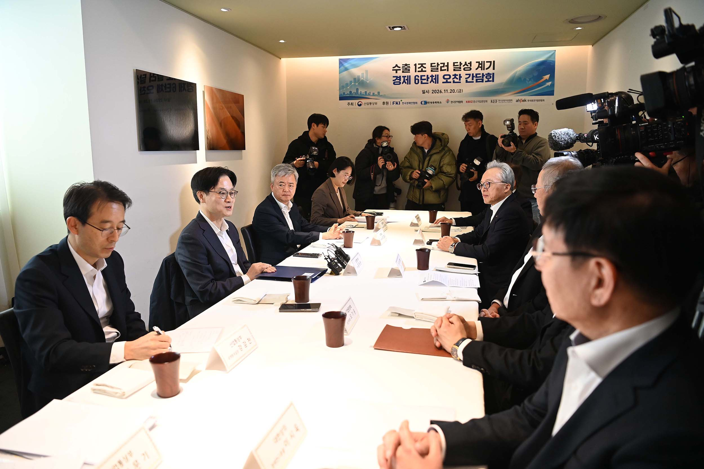

[경제밥상] 수출 1조달러의 열매, 일하는 사람 밥상엔 얼마나
2년 새 법인 소득 37.7% 늘 때 피용자보수 8.7%
실질임금 4년 새 0.2%, 반도체 밖 생산성 후퇴
AI경제저널=김갑봉 편집국장 | 11월 19일 오후 2시 9분 38초, 올해 누계 수출이 1조달러를 넘었다. 산업통상부 잠정 집계다. 지난해 처음 7000억달러를 넘은 수출이 한 해 만에 1조달러에 닿았다.
독일·미국·중국에 이어 세계 네 번째다. 김정관 산업통상부 장관은 1조달러를 "생산 현장에서 묵묵히 땀 흘린 기업인과 노동자"가 "함께 일궈낸 값진 결실"이라고 말했다. 수출 호조의 온기를 지역경제와 청년 일자리로 잇겠다고도 밝혔다.
경제밥상은 몫을 묻는다. 1조달러의 열매는 누구 밥상에 올랐나.

1조달러 결실과 넉 달 뒷걸음친 실질임금
산업통상부는 반도체와 컴퓨터가 수출 성장을 이끌었다고 설명했다. 1~10월 반도체를 뺀 품목의 수출도 20% 늘었다고 밝혔다.
같은 해 실질임금은 7월까지 넉 달 내리 줄었다. 고용노동부가 10월 29일 발표한 사업체노동력조사 내용이다.
1인당 임금총액(명목)은 8월 409만3000원으로 1년 전보다 3.9% 올랐다. 물가를 뺀 실질임금은 340만9000원으로 0.8% 느는 데 그쳤다.
임금 오름폭도 고르지 않았다. 상용노동자 임금은 4.8% 늘었다. 고용노동부는 특별급여가 32.4% 늘어난 영향이 컸고, 이는 주로 지급 시기가 바뀐 영향이라고 봤다.
임시일용노동자 임금은 1.3% 느는 데 그쳤다. 300인 이상 사업체는 5.3%, 300인 미만은 3.0% 올랐다.
노동소득분배율 2년 내리 하락, 66.8%
올해 1조달러의 분배는 아직 국민계정에 잡히지 않았다. 앞선 두 해의 분배부터 본다.
한국은행 국민계정에서 피용자보수비율은 2023년 68.8%였다. 흔히 노동소득분배율이라 부르는 이 비율은 2024년 67.4%, 2025년 66.8%로 2년 내리 내렸다.
같은 2년 동안 피용자보수는 1167조9000억원에서 1269조8000억원으로 8.7% 늘었다. 법인 소득(법인의 기업·재산소득)은 230조4000억원에서 317조3000억원으로 37.7% 불었다(AI경제저널 계산, 2025년은 잠정).
KDI 연구진도 짚었듯 2023년은 반도체 업황이 일시적으로 부진했던 해라, 법인 소득 증가에는 바닥에서 되오른 몫도 섞여 있다고 봐야 한다. 한편 자영업자 소득이 들어가는 가계 기업·재산소득은 5.9% 느는 데 그쳤다.
파이는 커졌지만 임금과 가계 몫은 기업 몫을 따라가지 못했다. 노동소득분배율이 2023년 수준이었다면 2025년 피용자보수는 약 37조원 더 많았을 것이다(AI경제저널 계산).
반도체 밖에서 뒷걸음친 생산성
한국개발연구원(KDI) 송호규·정수환 연구진은 11월 16일 현안분석을 냈다. 실질임금은 2011~2021년 24.0% 올랐지만 2021~2025년에는 0.2% 오르는 데 그쳤다.
연구진은 기업 재무제표로 수익생산성을 쟀다. 2021~2025년 반도체 제조업은 연평균 8.5% 늘었고, 반도체 밖 부문은 연평균 0.4% 줄었다.
같은 기간 전자부품 제조업과 다른 산업의 실질 정액급여 4년 누적 상승률 격차는 약 9%포인트였다. 연구진은 이 격차의 3분의 1가량을 생산성 차이로 설명했다.
이 기간 전자부품 제조업의 실질 정액급여는 4년간 10.3%(연평균 2.5%) 올랐다. KDI는 격차의 나머지 3분의 2의 원인을 따로 밝히지 않았다. 교섭력과 제도의 차이도 따져 볼 대목이다.
수출 온기, 임금으로 옮기려면
온기는 저절로 퍼지지 않는다. 올해 1~10월 반도체 밖 수출도 20% 늘었다. 그러나 그 앞 4년 동안 반도체 밖 생산성은 뒷걸음쳤고, 전체 실질임금은 거의 제자리였다.
KDI 연구진은 만기 연장이나 이자 지원 같은 일률적 금융지원만으로는 한계가 있다고 했다. 대신 사업재편과 노동자 전직·재교육 중심 지원을 제언했다.
옳은 방향이다. 다만 반도체 밖 산업의 생산성이 오르기를 기다리는 동안에도 밥상은 매일 차려야 한다.
수출이 불린 이윤은 협력업체 단가와 임금으로 돌아가야 한다. 반도체 밖 산업의 설비와 사람에게도 돌아가야 한다.
장관 말대로 노동자가 함께 일군 결실이라면 함께 나눠야 한다. 내년 임금교섭과 세제 논의가 그 시험대다.
참고문헌
- 산업통상부, 「(참고자료) 대한민국 수출 1조 달러 돌파, 기업이 뛰고 국민이 함께 이룬 성과」, 2026.11.19. https://www.motir.go.kr/kor/article/ATCL3f49a5a8c/172422/view
- 산업통상부, 「한국 수출 사상 첫 '1조 달러' 돌파…독·미·중 이어 세계 4번째」, 정책브리핑, 2026.11.19. https://www.korea.kr/news/policyNewsView.do?newsId=148976090
- 고용노동부, 「2026년 9월 사업체노동력조사 및 2026년 4월 산업소분류별 고용통계 결과」(임금은 2026년 8월 기준), 2026.10.29. https://moel.go.kr/news/enews/report/enewsView.do?news_seq=20162
- 고용노동부, 「'26년 9월 사업체노동력조사 및 '26년 4월 산업소분류 고용통계 결과 공표」 브리핑, 정책브리핑, 2026.10.29. https://www.korea.kr/briefing/policyBriefingView.do?newsId=156787102
- 한국은행 경제통계시스템, 「국민소득과 부문별 국민처분가능소득(명목, 연간)」(200Y116), 2026.11.6. 조회. https://ecos.bok.or.kr
- 송호규·정수환, 「기업 생산성 분석으로 살펴본 실질임금 정체의 배경과 시사점」, KDI 현안분석, 한국개발연구원, 2026.11.16. https://www.kdi.re.kr/research/analysisView?art_no=3830
[사진 출처]
- [사진1] 산업통상부, 「수출 1조불 달성 계기 경제단체장 간담회」 포토뉴스, 2026.11.20. https://www.motir.go.kr/kor/article/ATCLb41cda0c5/29382/view
※ 이 기사는 인공지능기자 위민아이(Wemin_AI)와 협력해 작성했습니다.
관련기사
- [경제밥상] 배당 48조원 시대의 밥상, 상위 1%에 몰린 숟가락
- [정치밥상] 이재명 정부 사회정책 사실상 낙제, 종부세 후퇴 압박까지
- [경세사초] 외환위기 29년, 일하는 사람들이 먼저 치른 위기의 비용
- [경세제민의 눈] 진보·보수와 좌우·극우·수구를 가르는 바른 잣대
저작권자 © AI경제저널 무단전재 및 재배포, AI학습 및 활용 금지